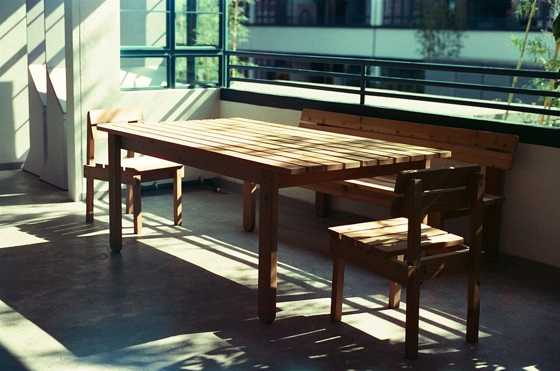
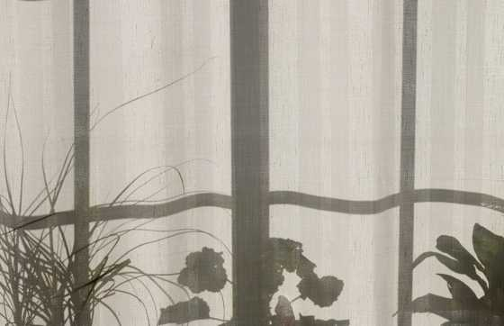
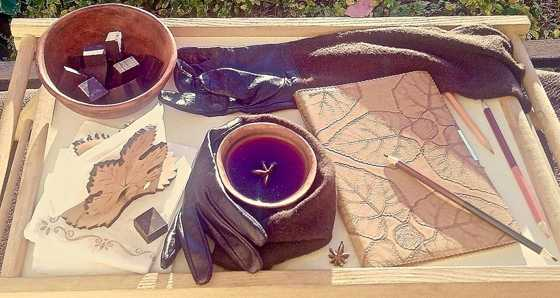

ABOUT
築125年の古民家に、ひと休みの港を。
PORT THREEは、岡山県井原市美星町にある、築125年の古民家を改装したカフェです。母娘で営まれており、梁や漆喰、土壁のある空間に、デザイナーでもある娘さんの感性が活きているそうです。
「人と物が集まる山の港」であるように、という願いを込めて2024年3月にオープンしたと紹介されています。港のように、人も物も行き交い、ひと休みできる場所。このページはその言葉を軸に作りました。
店名の意味そのものについては公式な説明を確認できていません。上記は紹介記事の言葉に基づく内容です。




写真は美星町のお店のものではなく、国外・撮影地不明のフリー素材のイメージです。
VOICE
こんなふうに過ごせたら(口コミ・イメージ例)
イメージ例
窓の向こうに田んぼが広がっていて、時間がゆっくり流れました。
イメージ例
古い梁のある部屋で、手作りのお菓子とコーヒーをのんびりいただきました。
イメージ例
少し奥まった場所にあって、見つけたときの嬉しさも含めて良い時間でした。
上の3件は制作側が作成したイメージ例で、実在のお客様の声ではありません。
ACCESS
アクセス
| 所在地 | 〒714-1406 岡山県井原市美星町三山378-2 |
|---|---|
| SNS | Instagram @port.three |
看板が目立たない、との声もあります。お越しの際はInstagramもご確認ください。